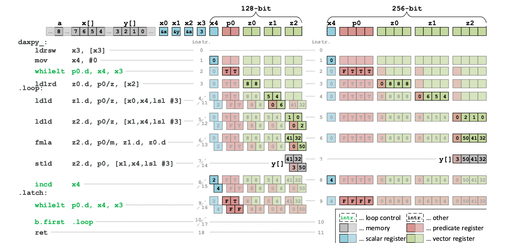
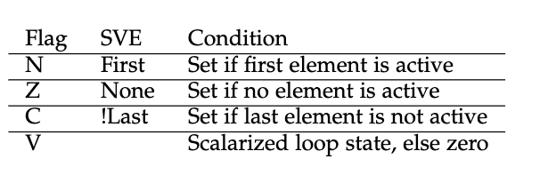
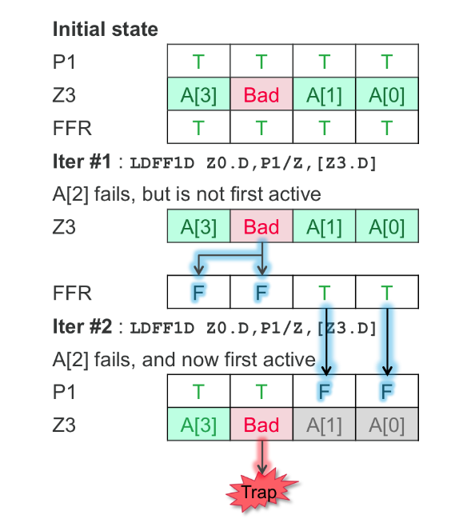

C++
终于到我校专业学习的语言了。
C++ 17 & 20
有关新特性永远是恒久不变的话题。从 C++11 的左右值到现在已经有很久时间了。在epyc 上一般的编译器性能排序是 AOCC>Intel>GCC>>LLVM. 但是MKL相对于amd的优化库还有一定优势，所以有时候Intel开最基本的x86优化也能和AOCC差不多。C++ 17对并行化做了很多优化，比如pstl、for_each（threading）、pmr、intel 的 sycl、nvidia的thrust/cub。可以很方便的修改namespace来获得无痛性能提升。C++ 20 最重要的特性是 ranges、filesystem等。不过LLVM 对新版本的支持一直都是最慢的。之前 icc 可以兼容一些古老的语法比如 VLA，但到了新版本以后取消了，这种不稳定的特性变更导致大厂不怎么把其当成标准。
这是笔者在其编译原理作业中出的一道题，需要给出 semantic rule 来拒绝 ??? 那行。但貌似只能在icc中通过标准。
template<class T>class array{
int s;
T* elements;
public:
array(int n); // allocate "n" elements and let "elements" refer to them
array(T* p, int n); // make this array refer to p[0..n-1]
operator T*(){return elements;}
int size()const{return s;}
// the usual container operations, such as = and [], much like vector
};
void h(array<double>a); //C++
void g(int m,double vla[m]); //C99
void f(int m,double vla1[m],array<double>a1) {
array<double> a2(vla1,m); // a2 refers to vla1
double*p=a1; //p refers to a1's elements
g(m,vla1);
g(a1.size(),a1); // a bit verbose
g(a1); //???
}
有关玄学
所有编译器可能出现的segfault，很多时候换个 intel 小版本可以通过。
有关编译自闭的时候的想法
建议若是 CMake 打开 make -n, configure 打开 make VERBOSE=1。如果需要与展开宏编译器，需要 CMake 开 -e 选项得到展开后的表达式。
需要广泛运用好 man、--help。
编译选项
LTO
为了解决不同库或者跨语言之间调用的开销，这块使用的基本是 LLVM 的 libLTO 和 tblgen。这个是自动开启的，原理是把库都弄成 LLVM bitcode 统一链接，其实并行版的 LTO 也不是很难实现，曾是前队长用 rust 写的并行计算的 project，具体可以参考源码。

PGO
通过分析程序运行时的实际行为，将结果反馈给编译器，使得编译器可以重新安排代码以减少指令缓存问题和分支预测误判，从而获得性能的提升。性能分析引导优化通过实际执行代码统计出运行频率最高的部分，编译器通过这些信息可以更加针对地优化代码。

- 第一阶段：编译参数中加上：
-prof-gen=srcpos-prof-dir=/tmp/profdata。其中-prof-dir是存储性能分析文件的目录。 - 第二阶段：运行编译好的程序，然后运行
profmerge -prof_dir /tmp/profdata生成汇总文件。 - 第三阶段：重新编译程序，使用参数：
-prof-use=nomerge -prof-func-groups -prof-dir=/tmp/profdata。
IPO
过程间优化和性能分析引导优化可能会相互影响，性能分析引导优化通常会帮助编译器生成内联函数，这会帮助过程间优化的效率。性能分析引导优化对分支预测效率的提升最有效果，许多分支执行的可能性无法在编译时判断，而通过性能分析引导优化，编译器可以针对经常执行的分支（热代码）和不经常执行的分支（冷代码）生成高效的汇编代码。
HLO
从下文我们知道的 LLVM IR 就已经出现的部分优化，我们知道 icc 实际上在 LLVM IR 之前还拥有 high level 的 ir。根据文档，主要做了
- Loop Permutation or Interchange
- Loop Distribution
- Loop Fusion
- Loop Unrolling
- Data Prefetching
- Scalar Replacement
- Unroll and Jam
- Loop Blocking or Tiling
- Partial-Sum Optimization
- Predicate Optimization
- Loop Reversal
- Profile-Guided Loop Unrolling
- Loop Peeling
- Data Transformation: Malloc Combining and Memset Combining, - Memory Layout Change
- Loop Rerolling
- Memset and Memcpy Recognition
- Statement Sinking for Creating Perfect Loopnests
- Multiversioning: Checks include Dependency of Memory References, - and Trip Counts
- Loop Collapsing
DOP
大家如果写过 UE 这种游戏引擎的程序或者kernel中需要 cache align 的struct，以及最近几年对DB内卷式的优化，会很熟悉这种数据结构。其最重要的思想就是把数据塞在 avx 对齐的 struct 中，所有的操作都是围绕着对struct的加乘运算。详见 https://neil3d.github.io/assets/img/ecs/DOD-Cpp.pdf。
LLVM
DC++/AOCC 都开始使用 LLVM 作为中间层
ICC 大致做了什么新特性
以最新的 2021.3.0 做静态分析，用 saxpy 做标程。意思是 Single-Precision A·X Plus Y。这是一维 BLAS 中的一个函数，经常被写作 kernel 来各种调参各种调寄存器和内存模型。其 C++ 版本如下
void saxpy(int n, float a, float * x, float * y)
{
for (int i = 0; i < n; ++i)
y[i] = a*x[i] + y[i];
}
LLVM IR 如下，完整路径是 https://godbolt.org/z/j5rrxhedG，主要hard code 进了各种预优化好的汇编，尤其是mov高地址这种快速取指方式。感觉是把VADDSS __m128 _mm_mask_add_ss (__m128 s, __mmask8 k, __m128 a, __m128 b);这种 Intel C/C++ Compiler Intrinsic Equivalent 当成库函数一起编译到 IR 上了。
.section .text
.LNDBG_TX:
# mark_description "Intel(R) C Intel(R) 64 Compiler Classic for applications running on Intel(R) 64, Version 2021.3.0 Build 2021";
# mark_description "0609_000000";
# mark_description "-g -o /app/output.s -masm=intel -S -gxx-name=/opt/compiler-explorer/gcc-10.1.0/bin/g++ -emit-llvm";
.intel_syntax noprefix
.file "example.cpp"
.text
..TXTST0:
.L_2__routine_start_saxpy(int, float, float*, float*)_0:
# -- Begin saxpy(int, float, float*, float*)
.text
# mark_begin;
.globl saxpy(int, float, float*, float*)
# --- saxpy(int, float, float *, float *)
saxpy(int, float, float*, float*):
# parameter 1(n): edi
# parameter 2(a): xmm0
# parameter 3(x): rsi
# parameter 4(y): rdx
..B1.1: # Preds ..B1.0
# Execution count [0.00e+00]
.cfi_startproc
.cfi_personality 0x3,__gxx_personality_v0
..___tag_value_saxpy(int, float, float*, float*).2:
..L3:
#2.1
..LN0:
.file 1 "/app/example.cpp"
.loc 1 2 is_stmt 1
push rbp #2.1
.cfi_def_cfa_offset 16
..LN1:
mov rbp, rsp #2.1
.cfi_def_cfa 6, 16
.cfi_offset 6, -16
..LN2:
sub rsp, 48 #2.1
..LN3:
mov DWORD PTR [-40+rbp], edi #2.1
..LN4:
movss DWORD PTR [-32+rbp], xmm0 #2.1
..LN5:
mov QWORD PTR [-24+rbp], rsi #2.1
..LN6:
mov QWORD PTR [-16+rbp], rdx #2.1
..LN7:
.loc 1 3 prologue_end is_stmt 1
mov DWORD PTR [-48+rbp], 0 #3.14
..LN8:
# LOE rbx rbp rsp r12 r13 r14 r15 rip
..B1.2: # Preds ..B1.3 ..B1.1
# Execution count [0.00e+00]
..LN9:
mov eax, DWORD PTR [-48+rbp] #3.19
..LN10:
mov edx, DWORD PTR [-40+rbp] #3.23
..LN11:
cmp eax, edx #3.23
..LN12:
jge ..B1.4 # Prob 50% #3.23
..LN13:
# LOE rbx rbp rsp r12 r13 r14 r15 rip
..B1.3: # Preds ..B1.2
# Execution count [0.00e+00]
..LN14:
.loc 1 4 is_stmt 1
movss xmm0, DWORD PTR [-32+rbp] #4.14
..LN15:
mov eax, DWORD PTR [-48+rbp] #4.18
..LN16:
movsxd rax, eax #4.16
..LN17:
imul rax, rax, 4 #4.16
..LN18:
add rax, QWORD PTR [-24+rbp] #4.16
..LN19:
movss xmm1, DWORD PTR [rax] #4.16
..LN20:
mulss xmm0, xmm1 #4.16
..LN21:
mov eax, DWORD PTR [-48+rbp] #4.25
..LN22:
movsxd rax, eax #4.23
..LN23:
imul rax, rax, 4 #4.23
..LN24:
add rax, QWORD PTR [-16+rbp] #4.23
..LN25:
movss xmm1, DWORD PTR [rax] #4.23
..LN26:
addss xmm0, xmm1 #4.23
..LN27:
mov eax, DWORD PTR [-48+rbp] #4.9
..LN28:
movsxd rax, eax #4.7
..LN29:
imul rax, rax, 4 #4.7
..LN30:
add rax, QWORD PTR [-16+rbp] #4.7
..LN31:
movss DWORD PTR [rax], xmm0 #4.7
..LN32:
.loc 1 3 is_stmt 1
mov eax, 1 #3.28
..LN33:
add eax, DWORD PTR [-48+rbp] #3.28
..LN34:
mov DWORD PTR [-48+rbp], eax #3.28
..LN35:
jmp ..B1.2 # Prob 100% #3.28
..LN36:
# LOE rbx rbp rsp r12 r13 r14 r15 rip
..B1.4: # Preds ..B1.2
# Execution count [0.00e+00]
..LN37:
.loc 1 5 epilogue_begin is_stmt 1
leave #5.1
.cfi_restore 6
..LN38:
ret #5.1
..LN39:
# LOE
..LN40:
.cfi_endproc
# mark_end;
.type saxpy(int, float, float*, float*),@function
.size saxpy(int, float, float*, float*),.-saxpy(int, float, float*, float*)
..LNsaxpy(int, float, float*, float*).41:
.LNsaxpy(int, float, float*, float*):
.data
# -- End saxpy(int, float, float*, float*)
.data
.section .note.GNU-stack, ""
// -- Begin DWARF2 SEGMENT .debug_info
.section .debug_info
.debug_info_seg:
.align 1
.4byte 0x000000be
....
汇编如下，可以看到每一个分支都有概率预测。自动向量化。
saxpy(int, float, float*, float*):
mov r9, rsi #2.1
test edi, edi #3.23
jle ..B1.36 # Prob 50% #3.23
cmp edi, 6 #3.3
jle ..B1.30 # Prob 50% #3.3
movsxd r8, edi #1.6
mov rax, rdx #4.16
sub rax, r9 #4.16
lea rcx, QWORD PTR [r8*4] #3.3
cmp rax, rcx #3.3
jge ..B1.5 # Prob 50% #3.3
neg rax #4.23
cmp rax, rcx #3.3
jl ..B1.30 # Prob 50% #3.3
..B1.5: # Preds ..B1.4 ..B1.3
cmp edi, 8 #3.3
jl ..B1.38 # Prob 10% #3.3
mov r10, rdx #3.3
and r10, 15 #3.3
test r10d, r10d #3.3
je ..B1.9 # Prob 50% #3.3
test r10d, 3 #3.3
jne ..B1.38 # Prob 10% #3.3
neg r10d #3.3
add r10d, 16 #3.3
shr r10d, 2 #3.3
..B1.9: # Preds ..B1.8 ..B1.6
lea eax, DWORD PTR [8+r10] #3.3
cmp edi, eax #3.3
jl ..B1.38 # Prob 10% #3.3
mov esi, edi #3.3
xor ecx, ecx #3.3
sub esi, r10d #3.3
and esi, 7 #3.3
neg esi #3.3
add esi, edi #3.3
mov eax, r10d #3.3
test r10d, r10d #3.3
jbe ..B1.14 # Prob 9% #3.3
..B1.12: # Preds ..B1.10 ..B1.12
movss xmm1, DWORD PTR [r9+rcx*4] #4.16
mulss xmm1, xmm0 #4.16
addss xmm1, DWORD PTR [rdx+rcx*4] #4.23
movss DWORD PTR [rdx+rcx*4], xmm1 #4.7
inc rcx #3.3
cmp rcx, rax #3.3
jb ..B1.12 # Prob 82% #3.3
..B1.14: # Preds ..B1.12 ..B1.10
lea rcx, QWORD PTR [r9+rax*4] #4.16
test rcx, 15 #3.3
je ..B1.18 # Prob 60% #3.3
movaps xmm1, xmm0 #1.6
shufps xmm1, xmm1, 0 #1.6
movsxd rcx, esi #3.3
..B1.16: # Preds ..B1.16 ..B1.15
movups xmm2, XMMWORD PTR [r9+rax*4] #4.16
movups xmm3, XMMWORD PTR [16+r9+rax*4] #4.16
mulps xmm2, xmm1 #4.16
mulps xmm3, xmm1 #4.16
addps xmm2, XMMWORD PTR [rdx+rax*4] #4.23
addps xmm3, XMMWORD PTR [16+rdx+rax*4] #4.23
movups XMMWORD PTR [rdx+rax*4], xmm2 #4.7
movups XMMWORD PTR [16+rdx+rax*4], xmm3 #4.7
add rax, 8 #3.3
cmp rax, rcx #3.3
jb ..B1.16 # Prob 82% #3.3
jmp ..B1.21 # Prob 100% #3.3
..B1.18: # Preds ..B1.14
movaps xmm1, xmm0 #1.6
shufps xmm1, xmm1, 0 #1.6
movsxd rcx, esi #3.3
..B1.19: # Preds ..B1.19 ..B1.18
movups xmm2, XMMWORD PTR [r9+rax*4] #4.16
movups xmm3, XMMWORD PTR [16+r9+rax*4] #4.16
mulps xmm2, xmm1 #4.16
mulps xmm3, xmm1 #4.16
addps xmm2, XMMWORD PTR [rdx+rax*4] #4.23
addps xmm3, XMMWORD PTR [16+rdx+rax*4] #4.23
movups XMMWORD PTR [rdx+rax*4], xmm2 #4.7
movups XMMWORD PTR [16+rdx+rax*4], xmm3 #4.7
add rax, 8 #3.3
cmp rax, rcx #3.3
jb ..B1.19 # Prob 82% #3.3
..B1.21: # Preds ..B1.19 ..B1.16
lea eax, DWORD PTR [1+rsi] #3.3
cmp eax, edi #3.3
ja ..B1.36 # Prob 50% #3.3
sub r8, rcx #3.3
cmp r8, 4 #3.3
jl ..B1.39 # Prob 10% #3.3
mov eax, r8d #3.3
xor r10d, r10d #3.3
and eax, -4 #3.3
lea rdi, QWORD PTR [rdx+rcx*4] #4.23
movsxd rax, eax #3.3
lea rcx, QWORD PTR [r9+rcx*4] #4.16
..B1.24: # Preds ..B1.24 ..B1.23
movups xmm2, XMMWORD PTR [rcx+r10*4] #4.16
mulps xmm2, xmm1 #4.16
addps xmm2, XMMWORD PTR [rdi+r10*4] #4.23
movups XMMWORD PTR [rdi+r10*4], xmm2 #4.7
add r10, 4 #3.3
cmp r10, rax #3.3
jb ..B1.24 # Prob 82% #3.3
..B1.26: # Preds ..B1.24 ..B1.39
cmp rax, r8 #3.3
jae ..B1.36 # Prob 9% #3.3
movsxd rsi, esi #4.7
lea rcx, QWORD PTR [rdx+rsi*4] #4.23
lea rdx, QWORD PTR [r9+rsi*4] #4.16
..B1.28: # Preds ..B1.28 ..B1.27
movss xmm1, DWORD PTR [rdx+rax*4] #4.16
mulss xmm1, xmm0 #4.16
addss xmm1, DWORD PTR [rcx+rax*4] #4.23
movss DWORD PTR [rcx+rax*4], xmm1 #4.7
inc rax #3.3
cmp rax, r8 #3.3
jb ..B1.28 # Prob 82% #3.3
jmp ..B1.36 # Prob 100% #3.3
..B1.30: # Preds ..B1.4 ..B1.2
mov eax, edi #3.3
mov esi, 1 #3.3
xor ecx, ecx #3.3
shr eax, 1 #3.3
je ..B1.34 # Prob 9% #3.3
..B1.32: # Preds ..B1.30 ..B1.32
movss xmm1, DWORD PTR [r9+rcx*8] #4.16
mulss xmm1, xmm0 #4.16
addss xmm1, DWORD PTR [rdx+rcx*8] #4.23
movss DWORD PTR [rdx+rcx*8], xmm1 #4.7
movss xmm2, DWORD PTR [4+r9+rcx*8] #4.16
mulss xmm2, xmm0 #4.16
addss xmm2, DWORD PTR [4+rdx+rcx*8] #4.23
movss DWORD PTR [4+rdx+rcx*8], xmm2 #4.7
inc rcx #3.3
cmp rcx, rax #3.3
jb ..B1.32 # Prob 63% #3.3
lea esi, DWORD PTR [1+rcx+rcx] #4.7
..B1.34: # Preds ..B1.33 ..B1.30
lea eax, DWORD PTR [-1+rsi] #3.3
cmp eax, edi #3.3
jae ..B1.36 # Prob 9% #3.3
movsxd rsi, esi #3.3
movss xmm1, DWORD PTR [-4+r9+rsi*4] #4.16
mulss xmm0, xmm1 #4.16
addss xmm0, DWORD PTR [-4+rdx+rsi*4] #4.23
movss DWORD PTR [-4+rdx+rsi*4], xmm0 #4.7
..B1.36: # Preds ..B1.28 ..B1.21 ..B1.34 ..B1.38 ..B1.1
ret #5.1
..B1.38: # Preds ..B1.5 ..B1.7 ..B1.9
xor esi, esi #3.3
cmp edi, 1 #3.3
jb ..B1.36 # Prob 50% #3.3
..B1.39: # Preds ..B1.22 ..B1.38
xor eax, eax #3.3
jmp ..B1.26 # Prob 100% #3.3
下面是 AOCC LLVM IR emit 出来的代码，并没有在 IR 上做什么文章，和 clang emit 的基本一样。
; ModuleID = './a.c'
source_filename = "./a.c"
target datalayout = "e-m:e-p270:32:32-p271:32:32-p272:64:64-i64:64-f80:128-n8:16:32:64-S128"
target triple = "x86_64-unknown-linux-gnu"
; Function Attrs: noinline nounwind optnone uwtable
define dso_local void @saxpy(i32 %n, float %a, float* %x, float* %y) #0 {
entry:
%n.addr = alloca i32, align 4
%a.addr = alloca float, align 4
%x.addr = alloca float*, align 8
%y.addr = alloca float*, align 8
%i = alloca i32, align 4
store i32 %n, i32* %n.addr, align 4
store float %a, float* %a.addr, align 4
store float* %x, float** %x.addr, align 8
store float* %y, float** %y.addr, align 8
store i32 0, i32* %i, align 4
br label %for.cond
for.cond: ; preds = %for.inc, %entry
%0 = load i32, i32* %i, align 4
%1 = load i32, i32* %n.addr, align 4
%cmp = icmp slt i32 %0, %1
br i1 %cmp, label %for.body, label %for.end
for.body: ; preds = %for.cond
%2 = load float, float* %a.addr, align 4
%3 = load float*, float** %x.addr, align 8
%4 = load i32, i32* %i, align 4
%idxprom = sext i32 %4 to i64
%arrayidx = getelementptr inbounds float, float* %3, i64 %idxprom
%5 = load float, float* %arrayidx, align 4
%mul = fmul float %2, %5
%6 = load float*, float** %y.addr, align 8
%7 = load i32, i32* %i, align 4
%idxprom1 = sext i32 %7 to i64
%arrayidx2 = getelementptr inbounds float, float* %6, i64 %idxprom1
%8 = load float, float* %arrayidx2, align 4
%add = fadd float %mul, %8
%9 = load float*, float** %y.addr, align 8
%10 = load i32, i32* %i, align 4
%idxprom3 = sext i32 %10 to i64
%arrayidx4 = getelementptr inbounds float, float* %9, i64 %idxprom3
store float %add, float* %arrayidx4, align 4
br label %for.inc
for.inc: ; preds = %for.body
%11 = load i32, i32* %i, align 4
%inc = add nsw i32 %11, 1
store i32 %inc, i32* %i, align 4
br label %for.cond
for.end: ; preds = %for.cond
ret void
}
attributes #0 = { noinline nounwind optnone uwtable "disable-tail-calls"="false" "frame-pointer"="all" "less-precise-fpmad"="false" "min-legal-vector-width"="0" "no-infs-fp-math"="false" "no-jump-tables"="false" "no-nans-fp-math"="false" "no-signed-zeros-fp-math"="false" "no-trapping-math"="true" "stack-protector-buffer-size"="8" "target-cpu"="x86-64" "target-features"="+cx8,+fxsr,+mmx,+sse,+sse2,+x87" "tune-cpu"="generic" "unsafe-fp-math"="false" "use-soft-float"="false" }
!llvm.module.flags = !{!0}
!llvm.ident = !{!1}
!0 = !{i32 1, !"wchar_size", i32 4}
!1 = !{!"AMD clang version 12.0.0 (CLANG: AOCC_3.0.0-Build#78 2020_12_10) (based on LLVM Mirror.Version.12.0.0)"}
和 icc 编译的向量化部分基本一样，但没有概率模型，可惜上面的概率模型的 cost model 是 intel processor 的，所以最终结果icc和aocc不分伯仲。
.text
.file "a.c"
.globl saxpy # -- Begin function saxpy
.p2align 4, 0x90
.type saxpy,@function
saxpy: # @saxpy
.cfi_startproc
# %bb.0: # %entry
testl %edi, %edi
jle .LBB0_16
# %bb.1: # %for.body.preheader
movl %edi, %r9d
cmpl $7, %edi
jbe .LBB0_2
# %bb.7: # %vector.memcheck
leaq (%rsi,%r9,4), %rax
cmpq %rdx, %rax
jbe .LBB0_9
# %bb.8: # %vector.memcheck
leaq (%rdx,%r9,4), %rax
cmpq %rsi, %rax
jbe .LBB0_9
.LBB0_2:
xorl %ecx, %ecx
.LBB0_3: # %for.body.preheader23
movq %rcx, %rax
notq %rax
testb $1, %r9b
je .LBB0_5
# %bb.4: # %for.body.prol
movss (%rsi,%rcx,4), %xmm1 # xmm1 = mem[0],zero,zero,zero
mulss %xmm0, %xmm1
addss (%rdx,%rcx,4), %xmm1
movss %xmm1, (%rdx,%rcx,4)
orq $1, %rcx
.LBB0_5: # %for.body.prol.loopexit
addq %r9, %rax
je .LBB0_16
.p2align 4, 0x90
.LBB0_6: # %for.body
# =>This Inner Loop Header: Depth=1
movss (%rsi,%rcx,4), %xmm1 # xmm1 = mem[0],zero,zero,zero
mulss %xmm0, %xmm1
addss (%rdx,%rcx,4), %xmm1
movss %xmm1, (%rdx,%rcx,4)
movss 4(%rsi,%rcx,4), %xmm1 # xmm1 = mem[0],zero,zero,zero
mulss %xmm0, %xmm1
addss 4(%rdx,%rcx,4), %xmm1
movss %xmm1, 4(%rdx,%rcx,4)
addq $2, %rcx
cmpq %rcx, %r9
jne .LBB0_6
jmp .LBB0_16
.LBB0_9: # %vector.ph
movl %r9d, %ecx
andl $-8, %ecx
movaps %xmm0, %xmm1
shufps $0, %xmm0, %xmm1 # xmm1 = xmm1[0,0],xmm0[0,0]
leaq -8(%rcx), %rax
movq %rax, %r8
shrq $3, %r8
addq $1, %r8
testq %rax, %rax
je .LBB0_10
# %bb.11: # %vector.ph.new
movq %r8, %rax
andq $-2, %rax
negq %rax
xorl %edi, %edi
.p2align 4, 0x90
.LBB0_12: # %vector.body
# =>This Inner Loop Header: Depth=1
movups (%rsi,%rdi,4), %xmm2
movups 16(%rsi,%rdi,4), %xmm3
mulps %xmm1, %xmm2
mulps %xmm1, %xmm3
movups (%rdx,%rdi,4), %xmm4
addps %xmm2, %xmm4
movups 16(%rdx,%rdi,4), %xmm2
addps %xmm3, %xmm2
movups 32(%rdx,%rdi,4), %xmm3
movups 48(%rdx,%rdi,4), %xmm5
movups %xmm4, (%rdx,%rdi,4)
movups %xmm2, 16(%rdx,%rdi,4)
movups 32(%rsi,%rdi,4), %xmm2
movups 48(%rsi,%rdi,4), %xmm4
mulps %xmm1, %xmm2
addps %xmm3, %xmm2
mulps %xmm1, %xmm4
addps %xmm5, %xmm4
movups %xmm2, 32(%rdx,%rdi,4)
movups %xmm4, 48(%rdx,%rdi,4)
addq $16, %rdi
addq $2, %rax
jne .LBB0_12
# %bb.13: # %middle.block.unr-lcssa
testb $1, %r8b
je .LBB0_15
.LBB0_14: # %vector.body.epil
movups (%rsi,%rdi,4), %xmm2
movups 16(%rsi,%rdi,4), %xmm3
mulps %xmm1, %xmm2
mulps %xmm1, %xmm3
movups (%rdx,%rdi,4), %xmm1
addps %xmm2, %xmm1
movups 16(%rdx,%rdi,4), %xmm2
addps %xmm3, %xmm2
movups %xmm1, (%rdx,%rdi,4)
movups %xmm2, 16(%rdx,%rdi,4)
.LBB0_15: # %middle.block
cmpq %r9, %rcx
jne .LBB0_3
.LBB0_16: # %for.cond.cleanup
retq
.LBB0_10:
xorl %edi, %edi
testb $1, %r8b
jne .LBB0_14
jmp .LBB0_15
.Lfunc_end0:
.size saxpy, .Lfunc_end0-saxpy
.cfi_endproc
# -- End function
.ident "AMD clang version 12.0.0 (CLANG: AOCC_3.0.0-Build#78 2020_12_10) (based on LLVM Mirror.Version.12.0.0)"
.section ".note.GNU-stack","",@progbits
.addrsig
Another test on NVHPC, actually you can hack the backend CPU part using AOCC with nvc -march=zen2 -Mvect=simd:256 -Mcache_align -fma -S a.c.
; ModuleID = 'a.c'
target datalayout = "e-p:64:64-i64:64-f80:128-n8:16:32:64-S128"
target triple = "x86_64-pc-linux-gnu"
define internal void @pgCplus_compiled.() noinline {
L.entry:
ret void
}
define void @saxpy(i32 signext %n.arg, float %a.arg, float* %x.arg, float* %y.arg) #0 !dbg !17 {
L.entry:
%n.addr = alloca i32, align 4
%a.addr = alloca float, align 4
%x.addr = alloca float*, align 8
%y.addr = alloca float*, align 8
%.ndi0002.addr = alloca i32, align 4
%.ndi0003.addr = alloca i32, align 4
%.vv0000.addr = alloca i8*, align 8
%.vv0001.addr = alloca i8*, align 8
%.vv0002.addr = alloca i8*, align 8
%.r1.0148.addr = alloca <8 x float>, align 4
%.lcr010001.addr = alloca i32, align 4
store i32 %n.arg, i32* %n.addr, align 4, !tbaa !29
store float %a.arg, float* %a.addr, align 4, !tbaa !29
store float* %x.arg, float** %x.addr, align 8, !tbaa !30
store float* %y.arg, float** %y.addr, align 8, !tbaa !30
%0 = load i32, i32* %n.addr, align 4, !tbaa !32, !dbg !23
%1 = icmp sle i32 %0, 0, !dbg !23
br i1 %1, label %L.B0005, label %L.B0014, !dbg !23
L.B0014:
%2 = load float*, float** %y.addr, align 8, !tbaa !30, !dbg !23
%3 = bitcast float* %2 to i8*, !dbg !23
%4 = load float*, float** %x.addr, align 8, !tbaa !30, !dbg !23
%5 = bitcast float* %4 to i8*, !dbg !23
%6 = ptrtoint i8* %5 to i64, !dbg !23
%7 = sub i64 0, %6, !dbg !23
%8 = getelementptr i8, i8* %3, i64 %7, !dbg !23
%9 = icmp ule i8* %8, null, !dbg !23
br i1 %9, label %L.B0008, label %L.B0015, !dbg !23
L.B0015:
%10 = bitcast float* %2 to i8*, !dbg !23
%11 = bitcast float* %4 to i8*, !dbg !23
%12 = ptrtoint i8* %11 to i64, !dbg !23
%13 = sub i64 0, %12, !dbg !23
%14 = getelementptr i8, i8* %10, i64 %13, !dbg !23
%15 = inttoptr i64 32 to i8*, !dbg !23
%16 = icmp ult i8* %14, %15, !dbg !23
br i1 %16, label %L.B0007, label %L.B0008, !dbg !23
L.B0008:
store i32 0, i32* %.ndi0002.addr, align 4, !tbaa !32, !dbg !23
%17 = load i32, i32* %n.addr, align 4, !tbaa !32, !dbg !23
store i32 %17, i32* %.ndi0003.addr, align 4, !tbaa !32, !dbg !23
%18 = icmp slt i32 %17, 8, !dbg !23
br i1 %18, label %L.B0011, label %L.B0016, !dbg !23
L.B0016:
store i8* null, i8** %.vv0000.addr, align 8, !tbaa !30, !dbg !23
%19 = load float*, float** %y.addr, align 8, !tbaa !30, !dbg !23
%20 = bitcast float* %19 to i8*, !dbg !23
store i8* %20, i8** %.vv0001.addr, align 8, !tbaa !30, !dbg !23
%21 = load float*, float** %x.addr, align 8, !tbaa !30, !dbg !23
%22 = bitcast float* %21 to i8*, !dbg !23
store i8* %22, i8** %.vv0002.addr, align 8, !tbaa !30, !dbg !23
%23 = sub i32 %17, 7, !dbg !23
store i32 %23, i32* %.ndi0003.addr, align 4, !tbaa !32, !dbg !23
%24 = load float, float* %a.addr, align 4, !tbaa !34, !dbg !23
%25 = insertelement <8 x float> undef, float %24, i32 0, !dbg !23
%26 = shufflevector <8 x float> %25, <8 x float> undef, <8 x i32> <i32 0, i32 0, i32 0, i32 0, i32 0, i32 0, i32 0, i32 0>, !dbg !23
store <8 x float> %26, <8 x float>* %.r1.0148.addr, align 1, !tbaa !29, !dbg !23
br label %L.B0012
L.B0012:
%27 = load <8 x float>, <8 x float>* %.r1.0148.addr, align 4, !tbaa !29, !dbg !23
%28 = load i8*, i8** %.vv0002.addr, align 8, !tbaa !30, !dbg !23
%29 = load i8*, i8** %.vv0000.addr, align 8, !tbaa !30, !dbg !23
%30 = ptrtoint i8* %29 to i64, !dbg !23
%31 = getelementptr i8, i8* %28, i64 %30, !dbg !23
%32 = bitcast i8* %31 to <8 x float>*, !dbg !23
%33 = load <8 x float>, <8 x float>* %32, align 4, !tbaa !29, !dbg !23
%34 = load i8*, i8** %.vv0001.addr, align 8, !tbaa !30, !dbg !23
%35 = getelementptr i8, i8* %34, i64 %30, !dbg !23
%36 = bitcast i8* %35 to <8 x float>*, !dbg !23
%37 = load <8 x float>, <8 x float>* %36, align 4, !tbaa !29, !dbg !23
%38 = call <8 x float> @llvm.fma.v8f32 (<8 x float> %27, <8 x float> %33, <8 x float> %37), !dbg !23
store <8 x float> %38, <8 x float>* %36, align 1, !tbaa !29, !dbg !23
%39 = getelementptr i8, i8* %29, i64 32, !dbg !23
store i8* %39, i8** %.vv0000.addr, align 8, !tbaa !30, !dbg !23
%40 = load i32, i32* %.ndi0003.addr, align 4, !tbaa !32, !dbg !23
%41 = sub i32 %40, 8, !dbg !23
store i32 %41, i32* %.ndi0003.addr, align 4, !tbaa !32, !dbg !23
%42 = icmp sgt i32 %41, 0, !dbg !23
br i1 %42, label %L.B0012, label %L.B0017, !llvm.loop !24, !dbg !23
L.B0017:
%43 = load i32, i32* %.ndi0003.addr, align 4, !tbaa !32, !dbg !23
%44 = add i32 %43, 7, !dbg !23
store i32 %44, i32* %.ndi0003.addr, align 4, !tbaa !32, !dbg !23
%45 = icmp eq i32 %44, 0, !dbg !23
br i1 %45, label %L.B0013, label %L.B0018, !dbg !23
L.B0018:
%46 = load i32, i32* %n.addr, align 4, !tbaa !32, !dbg !23
%47 = and i32 %46, -8, !dbg !23
store i32 %47, i32* %.ndi0002.addr, align 4, !tbaa !32, !dbg !23
br label %L.B0011
L.B0011:
%48 = load i32, i32* %.ndi0002.addr, align 4, !tbaa !32, !dbg !23
%49 = sext i32 %48 to i64, !dbg !23
%50 = load float*, float** %y.addr, align 8, !tbaa !30, !dbg !23
%51 = getelementptr float, float* %50, i64 %49, !dbg !23
%52 = load float, float* %51, align 4, !tbaa !29, !dbg !23
%53 = load float, float* %a.addr, align 4, !tbaa !34, !dbg !23
%54 = load float*, float** %x.addr, align 8, !tbaa !30, !dbg !23
%55 = getelementptr float, float* %54, i64 %49, !dbg !23
%56 = load float, float* %55, align 4, !tbaa !29, !dbg !23
%57 = call float @llvm.fma.f32 (float %53, float %56, float %52), !dbg !23
store float %57, float* %51, align 4, !tbaa !29, !dbg !23
%58 = add i32 %48, 1, !dbg !23
store i32 %58, i32* %.ndi0002.addr, align 4, !tbaa !32, !dbg !23
%59 = load i32, i32* %.ndi0003.addr, align 4, !tbaa !32, !dbg !23
%60 = sub i32 %59, 1, !dbg !23
store i32 %60, i32* %.ndi0003.addr, align 4, !tbaa !32, !dbg !23
%61 = icmp sgt i32 %60, 0, !dbg !23
br i1 %61, label %L.B0011, label %L.B0013, !llvm.loop !24, !dbg !23
L.B0013:
br label %L.B0009, !dbg !23
L.B0007:
store i32 0, i32* %.ndi0002.addr, align 4, !tbaa !32, !dbg !23
%62 = load i32, i32* %n.addr, align 4, !tbaa !32, !dbg !23
store i32 %62, i32* %.lcr010001.addr, align 4, !tbaa !32, !dbg !23
br label %L.B0010
L.B0010:
%63 = load i32, i32* %.ndi0002.addr, align 4, !tbaa !32, !dbg !23
%64 = sext i32 %63 to i64, !dbg !23
%65 = load float*, float** %y.addr, align 8, !tbaa !30, !dbg !23
%66 = getelementptr float, float* %65, i64 %64, !dbg !23
%67 = load float, float* %66, align 4, !tbaa !29, !dbg !23
%68 = load float, float* %a.addr, align 4, !tbaa !34, !dbg !23
%69 = load float*, float** %x.addr, align 8, !tbaa !30, !dbg !23
%70 = getelementptr float, float* %69, i64 %64, !dbg !23
%71 = load float, float* %70, align 4, !tbaa !29, !dbg !23
%72 = call float @llvm.fma.f32 (float %68, float %71, float %67), !dbg !23
store float %72, float* %66, align 4, !tbaa !29, !dbg !23
%73 = add i32 %63, 1, !dbg !23
store i32 %73, i32* %.ndi0002.addr, align 4, !tbaa !32, !dbg !23
%74 = load i32, i32* %.lcr010001.addr, align 4, !tbaa !32, !dbg !23
%75 = icmp slt i32 %73, %74, !dbg !23
br i1 %75, label %L.B0010, label %L.B0009, !dbg !23
L.B0009:
br label %L.B0005
L.B0005:
ret void, !dbg !26
}
declare float @llvm.fma.f32(float, float, float)
declare <8 x float> @llvm.fma.v8f32(<8 x float>, <8 x float>, <8 x float>)
declare i32 @__gxx_personality_v0(...)
; Named metadata
!llvm.module.flags = !{ !1, !2 }
!llvm.dbg.cu = !{ !10 }
; Metadata
!1 = !{ i32 2, !"Dwarf Version", i32 4 }
!2 = !{ i32 2, !"Debug Info Version", i32 3 }
!3 = !DIFile(filename: "a.c", directory: "/home/victoryang")
; !4 = !DIFile(tag: DW_TAG_file_type, pair: !3)
!4 = !{ i32 41, !3 }
!5 = !{ }
!6 = !{ }
!7 = !{ !17 }
!8 = !{ }
!9 = !{ }
!10 = distinct !DICompileUnit(file: !3, language: DW_LANG_C_plus_plus, producer: " NVC++ 21.5-0", enums: !5, retainedTypes: !6, globals: !8, emissionKind: FullDebug, imports: !9)
!11 = !DIBasicType(tag: DW_TAG_base_type, name: "int", size: 32, align: 32, encoding: DW_ATE_signed)
!12 = !DIBasicType(tag: DW_TAG_base_type, name: "float", size: 32, align: 32, encoding: DW_ATE_float)
!13 = !DIDerivedType(tag: DW_TAG_pointer_type, size: 64, align: 64, baseType: !12)
!14 = !{ null, !11, !12, !13, !13 }
!15 = !DISubroutineType(types: !14)
!16 = !{ }
!17 = distinct !DISubprogram(file: !3, scope: !10, name: "saxpy", line: 2, type: !15, spFlags: 8, unit: !10, scopeLine: 2)
!18 = !DILocation(line: 2, column: 1, scope: !17)
!19 = !DILexicalBlock(file: !3, scope: !17, line: 2, column: 1)
!20 = !DILocation(line: 2, column: 1, scope: !19)
!21 = !DILexicalBlock(file: !3, scope: !19, line: 2, column: 1)
!22 = !DILocation(line: 2, column: 1, scope: !21)
!23 = !DILocation(line: 3, column: 1, scope: !21)
!24 = !{ !24, !25 }
!25 = !{ !"llvm.loop.vectorize.enable", i1 0 }
!26 = !DILocation(line: 5, column: 1, scope: !19)
!27 = !{ !"PGI C[++] TBAA" }
!28 = !{ !"omnipotent char", !27, i64 0 }
!29 = !{ !28, !28, i64 0 }
!30 = !{ !"<T>*", !28, i64 0 }
!31 = !{ !"int", !28, i64 0 }
!32 = !{ !31, !31, i64 0 }
!33 = !{ !"float", !28, i64 0 }
!34 = !{ !33, !33, i64 0 }
and
.text
.file "a.ll"
.globl saxpy # -- Begin function saxpy
.p2align 4, 0x90
.type saxpy,@function
saxpy: # @saxpy
.Lfunc_begin0:
.file 1 "/home/victoryang/a.c"
.loc 1 2 0 # a.c:2:0
.cfi_sections .debug_frame
.cfi_startproc
# %bb.0: # %L.entry
.loc 1 3 1 prologue_end # a.c:3:1
testl %edi, %edi
jle .LBB0_19
# %bb.1: # %L.B0014
movq %rdx, %rax
subq %rsi, %rax
je .LBB0_11
# %bb.2: # %L.B0014
cmpq $31, %rax
ja .LBB0_11
# %bb.3: # %L.B0010.preheader
movl %edi, %eax
cmpl $31, %edi
jbe .LBB0_4
# %bb.5: # %vector.memcheck
leaq (%rsi,%rax,4), %rcx
cmpq %rdx, %rcx
jbe .LBB0_7
# %bb.6: # %vector.memcheck
.loc 1 0 1 is_stmt 0 # a.c:0:1
leaq (%rdx,%rax,4), %rcx
.loc 1 3 1 # a.c:3:1
cmpq %rsi, %rcx
jbe .LBB0_7
.LBB0_4:
.loc 1 0 1 # a.c:0:1
xorl %ecx, %ecx
.p2align 4, 0x90
.LBB0_10: # %L.B0010
# =>This Inner Loop Header: Depth=1
.loc 1 3 1 # a.c:3:1
vmovss (%rsi,%rcx,4), %xmm1 # xmm1 = mem[0],zero,zero,zero
vfmadd213ss (%rdx,%rcx,4), %xmm0, %xmm1 # xmm1 = (xmm0 * xmm1) + mem
vmovss %xmm1, (%rdx,%rcx,4)
incq %rcx
cmpq %rcx, %rax
jne .LBB0_10
jmp .LBB0_19
.LBB0_11: # %L.B0008
.loc 1 0 1 # a.c:0:1
xorl %ecx, %ecx
.loc 1 3 1 # a.c:3:1
cmpl $8, %edi
jge .LBB0_13
# %bb.12:
.loc 1 0 1 # a.c:0:1
movl %edi, %eax
jmp .LBB0_17
.LBB0_13: # %L.B0016
.loc 1 3 1 # a.c:3:1
vbroadcastss %xmm0, %ymm1
xorl %ecx, %ecx
movl %edi, %eax
.p2align 4, 0x90
.LBB0_14: # %L.B0012
# =>This Inner Loop Header: Depth=1
vmovups (%rsi,%rcx), %ymm2
movl %eax, %r8d
vfmadd213ps (%rdx,%rcx), %ymm1, %ymm2 # ymm2 = (ymm1 * ymm2) + mem
leal -8(%r8), %eax
addl $-7, %r8d
vmovups %ymm2, (%rdx,%rcx)
addq $32, %rcx
cmpl $8, %r8d
jg .LBB0_14
# %bb.15: # %L.B0017
testl %eax, %eax
je .LBB0_19
# %bb.16: # %L.B0018
andl $-8, %edi
movl %edi, %ecx
.LBB0_17: # %L.B0011.preheader
incl %eax
.p2align 4, 0x90
.LBB0_18: # %L.B0011
# =>This Inner Loop Header: Depth=1
movslq %ecx, %rcx
decl %eax
vmovss (%rsi,%rcx,4), %xmm1 # xmm1 = mem[0],zero,zero,zero
vfmadd213ss (%rdx,%rcx,4), %xmm0, %xmm1 # xmm1 = (xmm0 * xmm1) + mem
vmovss %xmm1, (%rdx,%rcx,4)
incl %ecx
cmpl $1, %eax
jg .LBB0_18
.Ltmp0:
.LBB0_19: # %L.B0005
.loc 1 5 1 is_stmt 1 # a.c:5:1
vzeroupper
retq
.LBB0_7: # %vector.ph
.Ltmp1:
.loc 1 3 1 # a.c:3:1
vbroadcastss %xmm0, %ymm1
movl %eax, %ecx
xorl %edi, %edi
andl $-32, %ecx
.p2align 4, 0x90
.LBB0_8: # %vector.body
# =>This Inner Loop Header: Depth=1
vmovups (%rsi,%rdi,4), %ymm2
vmovups 32(%rsi,%rdi,4), %ymm3
vmovups 64(%rsi,%rdi,4), %ymm4
vmovups 96(%rsi,%rdi,4), %ymm5
vfmadd213ps (%rdx,%rdi,4), %ymm1, %ymm2 # ymm2 = (ymm1 * ymm2) + mem
vfmadd213ps 32(%rdx,%rdi,4), %ymm1, %ymm3 # ymm3 = (ymm1 * ymm3) + mem
vfmadd213ps 64(%rdx,%rdi,4), %ymm1, %ymm4 # ymm4 = (ymm1 * ymm4) + mem
vfmadd213ps 96(%rdx,%rdi,4), %ymm1, %ymm5 # ymm5 = (ymm1 * ymm5) + mem
vmovups %ymm2, (%rdx,%rdi,4)
vmovups %ymm3, 32(%rdx,%rdi,4)
vmovups %ymm4, 64(%rdx,%rdi,4)
vmovups %ymm5, 96(%rdx,%rdi,4)
addq $32, %rdi
cmpq %rdi, %rcx
jne .LBB0_8
# %bb.9: # %middle.block
cmpq %rax, %rcx
jne .LBB0_10
jmp .LBB0_19
.Ltmp2:
.Lfunc_end0:
.size saxpy, .Lfunc_end0-saxpy
.cfi_endproc
# -- End function
.section .debug_abbrev,"",@progbits
.byte 1 # Abbreviation Code
.byte 17 # DW_TAG_compile_unit
.byte 1 # DW_CHILDREN_yes
.byte 37 # DW_AT_producer
.byte 14 # DW_FORM_strp
.byte 19 # DW_AT_language
.byte 5 # DW_FORM_data2
.byte 3 # DW_AT_name
.byte 14 # DW_FORM_strp
.byte 16 # DW_AT_stmt_list
.byte 23 # DW_FORM_sec_offset
.byte 27 # DW_AT_comp_dir
.byte 14 # DW_FORM_strp
.ascii "\264B" # DW_AT_GNU_pubnames
.byte 25 # DW_FORM_flag_present
.byte 17 # DW_AT_low_pc
.byte 1 # DW_FORM_addr
.byte 18 # DW_AT_high_pc
.byte 6 # DW_FORM_data4
.byte 0 # EOM(1)
.byte 0 # EOM(2)
.byte 2 # Abbreviation Code
.byte 46 # DW_TAG_subprogram
.byte 0 # DW_CHILDREN_no
.byte 17 # DW_AT_low_pc
.byte 1 # DW_FORM_addr
.byte 18 # DW_AT_high_pc
.byte 6 # DW_FORM_data4
.byte 64 # DW_AT_frame_base
.byte 24 # DW_FORM_exprloc
.byte 3 # DW_AT_name
.byte 14 # DW_FORM_strp
.byte 58 # DW_AT_decl_file
.byte 11 # DW_FORM_data1
.byte 59 # DW_AT_decl_line
.byte 11 # DW_FORM_data1
.byte 63 # DW_AT_external
.byte 25 # DW_FORM_flag_present
.byte 0 # EOM(1)
.byte 0 # EOM(2)
.byte 0 # EOM(3)
.section .debug_info,"",@progbits
.Lcu_begin0:
.long .Ldebug_info_end0-.Ldebug_info_start0 # Length of Unit
.Ldebug_info_start0:
.short 4 # DWARF version number
.long .debug_abbrev # Offset Into Abbrev. Section
.byte 8 # Address Size (in bytes)
.byte 1 # Abbrev [1] 0xb:0x35 DW_TAG_compile_unit
.long .Linfo_string0 # DW_AT_producer
.short 4 # DW_AT_language
.long .Linfo_string1 # DW_AT_name
.long .Lline_table_start0 # DW_AT_stmt_list
.long .Linfo_string2 # DW_AT_comp_dir
# DW_AT_GNU_pubnames
.quad .Lfunc_begin0 # DW_AT_low_pc
.long .Lfunc_end0-.Lfunc_begin0 # DW_AT_high_pc
.byte 2 # Abbrev [2] 0x2a:0x15 DW_TAG_subprogram
.quad .Lfunc_begin0 # DW_AT_low_pc
.long .Lfunc_end0-.Lfunc_begin0 # DW_AT_high_pc
.byte 1 # DW_AT_frame_base
.byte 87
.long .Linfo_string3 # DW_AT_name
.byte 1 # DW_AT_decl_file
.byte 2 # DW_AT_decl_line
# DW_AT_external
.byte 0 # End Of Children Mark
.Ldebug_info_end0:
.section .debug_str,"MS",@progbits,1
.Linfo_string0:
.asciz " NVC++ 21.5-0" # string offset=0
.Linfo_string1:
.asciz "a.c" # string offset=14
.Linfo_string2:
.asciz "/home/victoryang" # string offset=18
.Linfo_string3:
.asciz "saxpy" # string offset=35
.section .debug_pubnames,"",@progbits
.long .LpubNames_end0-.LpubNames_begin0 # Length of Public Names Info
.LpubNames_begin0:
.short 2 # DWARF Version
.long .Lcu_begin0 # Offset of Compilation Unit Info
.long 64 # Compilation Unit Length
.long 42 # DIE offset
.asciz "saxpy" # External Name
.long 0 # End Mark
.LpubNames_end0:
.section .debug_pubtypes,"",@progbits
.long .LpubTypes_end0-.LpubTypes_begin0 # Length of Public Types Info
.LpubTypes_begin0:
.short 2 # DWARF Version
.long .Lcu_begin0 # Offset of Compilation Unit Info
.long 64 # Compilation Unit Length
.long 0 # End Mark
.LpubTypes_end0:
.section ".note.GNU-stack","",@progbits
.section .debug_line,"",@progbits
.Lline_table_start0:
GCC arm SVE
对于超算来说应该介绍 Arm FX 64 的。但笔者觉得还是先科普一下 SVE 比较好，说不定下一次 ISC 就有了。
saxpy with neon
// x0 = &x[0], x1 = &y[0], x2 = &a, x3 = &n
saxpy_:
ldrswx3, [x3] // x3=*n
movx4, #0 // x4=i=0
ldrd0, [x2] // d0=*a
b .latch
.loop:
ldrd1, [x0, x4, lsl #3]// d1=x[i]
ldrd2, [x1, x4, lsl #3]// d2=y[i]
fmaddd2, d1, d0, d2. // d2+=x[i]*a
strd2, [x1, x4, lsl #3]// y[i]=d2
addx4, x4, #1 // i+=1
.latch:
cmpx4, x3 // i < n
b.lt .loop// more to do?
ret
saxpy with sve
// x0 = &x[0], x1 = &y[0], x2 = &a, x3 = &n
saxpy_:
ldrswx3, [x3] // x3=*n
movx4, #0 // x4=i=0
whileltp0.d, x4, x3 // p0=while(i++<n)
ld1rdz0.d, p0/z, [x2]// p0:z0=bcast(*a)
.loop:
ld1dz1.d, p0/z, [x0, x4, lsl #3]// p0:z1=x[i]
ld1dz2.d, p0/z, [x1, x4, lsl #3]// p0:z2=y[i]
fmlaz2.d, p0/m, z1.d, z0.d // p0?z2+=x[i]*a
st1dz2.d, p0, [x1, x4, lsl #3] // p0?y[i]=z2
incdx4 // i+=(VL/64)
.latch:
whileltp0.d, x4, x3 // p0=while(i++<n)
b.first .loop // more to do?
ret
 There is no overhead in instruction count for the SVE version when compared to the equivalent scalar code, which allows a compiler to opportunistically vectorize loops withan unknown trip count.
-
16个可伸缩预测寄存器(P0-P15）：普通的内存和算数操作的控制仅限于P0-P7。但是生成predicate的指令（向量比较）和依赖predicate的指令（逻辑操作）会使用全部寄存器P0-P15。通过分析编译和手动优化，这样的分配方案被验证有效并且减轻了predicate寄存器在其它架构上被观察到的压力
-
mixed element尺寸控制：每个predicate寄存器允许将最低粒度降低到字节水平，所以每个bit位对应8blt的数据宽度。
-
predicate条件：在SVE中产生predication的指令是复用NZCV条件码flags,这个NZCV有不同的解释 
-
隐式顺序：predicate有一个隐式地从最低到最高位元素顺序解释，对应于一个等效的序列顺序。我们引用与此顺序有关的第一个和最后一个predicate elements以及它们的关联条件。
whileltp0 is to predict before the last max alignment which may cause throughput drain. OoO may shot the last element with low occpancy which lead to waste of this shot, alternatively, it could shot lower other (2^n) aligned instruction.
For hazard execution and speculation, you could easily doing gather load with z3 reg fault trap and reload. 
OpenMP
The compiler support the openmp by default. The OpenMP standard for specifying threading in programming languages like C and Fortran is implemented in the compiler itself and as such is an integral part of the compiler in question. The OMP and POSIX thread library underneath can vary, but this is normally hidden from the user. OpenMP makes use of POSIX threads so both an OpenMP library and a POSIX thread library is needed. The POSIX thread library is normally supplied with the distribution (typically /usr/lib64/libpthread.so).
\[ \begin{array}{|l|c|c|} \hline \text { Compiler } & \text { Flag to select OpenMP } & \text { OpenMP version supported } \\ \hline \text { Intel compilers } & \text {-qopenmp } & \text { From } 17.0 \text { on : } 4.5 \\ \hline \text { GNU compilers } & \text {-fopenmp } & \text { From GCC 6.1 on : 4.5 } \\ \hline \text { PGI compilers } & -\mathrm{mp} & 4.5 \\ \hline \end{array} \]
You definitely need to watch Fanrui's PPT and understand the implementation of OpenMP in Clang.
Ref
- https://ocw.mit.edu/courses/electrical-engineering-and-computer-science/6-172-performance-engineering-of-software-systems-fall-2018/lecture-slides/MIT6_172F18_lec9.pdf
- 程序员的自我修养
- 不同编译器的编译行为比较
- The ARM Scalable Vector Extension
- https://www.stonybrook.edu/commcms/ookami/support/_docs/1%20-%20Intro%20to%20A64FX.pdf